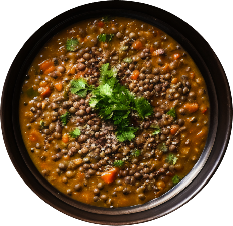

1 large can (28 ounces) diced tomatoes, lightly drained
4 cups vegetable broth
2 cups water
1 teaspoon salt, more to taste
Pinch of red pepper flakes
Freshly ground black pepper, to taste
1 cup chopped fresh collard greens or kale, tough ribs removed
1 to 2 tablespoons lemon juice (½ to 1 medium lemon), to taste

INSTRUCTIONS
Warm the olive oil in a large Dutch oven or pot over medium heat. One-fourth cup olive oil may
seem like a lot, but it adds a lovely richness and heartiness to this nutritious soup.
Once the oil is shimmering, add the chopped onion and carrot and cook, stirring often, until the
onion has softened and is turning translucent, about 5 minutes.
Add the garlic, cumin, curry powder and thyme. Cook until fragrant while stirring constantly,
about 30 seconds. Pour in the drained diced tomatoes and cook for a few more minutes, stirring
often, in order to enhance their flavor.
Pour in the lentils, broth and the water. Add 1 teaspoon salt and a pinch of red pepper flakes.
Season generously with freshly ground black pepper. Raise heat and bring the mixture to a boil,
then partially cover the pot and reduce the heat to maintain a gentle simmer. Cook for 25 to 30
minutes, or until the lentils are tender but still hold their shape.
Transfer 2 cups of the soup to a blender. Securely fasten the lid, protect your hand from steam
with a tea towel placed over the lid, and purée the soup until smooth. Pour the puréed soup back
into the pot. (Or, use an immersion blender to blend a portion of the soup.)
Add the chopped greens and cook for 5 more minutes, or until the greens have softened to your
liking. Remove the pot from the heat and stir in 1 tablespoon of lemon juice. Taste and season
with more salt, pepper and/or lemon juice until the flavors really sing. For spicier soup, add
another pinch or two of red pepper flakes.
Serve while hot. Leftovers will keep well for about 4 days in the refrigerator, or can be frozen
for several months (just defrost before serving).
INSTRUCTIONS (BONUS)INGREDIENTS
STEP 1
Warm the olive oil in a large Dutch oven or pot over medium heat. One-fourth cup olive oil may
seem like a lot, but it adds a lovely richness and heartiness to this nutritious soup.
STEP 2
Once the oil is shimmering, add the chopped onion and carrot and cook, stirring often, until the
onion has softened and is turning translucent, this takes about 5 minutes.
STEP 3
Add the garlic, cumin, curry powder and thyme. Cook until fragrant while stirring constantly,
about 30 seconds. Pour in the drained diced tomatoes and cook for a few more minutes, stirring
often, in order to enhance their flavor.
STEP 4
Pour in the lentils, broth and the water. Add 1 teaspoon salt and a pinch of red pepper flakes.
Season generously with freshly ground black pepper. Raise heat and bring the mixture to a boil,
then partially cover the pot and reduce the heat to maintain a gentle simmer. Cook for 25 to 30
minutes, or until the lentils are tender but still hold their shape.
STEP 5
Transfer 2 cups of the soup to a blender. Securely fasten the lid, protect your hand from steam
with a tea towel placed over the lid, and purée the soup until smooth. Pour the puréed soup back
into the pot. (Or, use an immersion blender to blend a portion of the soup.)
STEP 6
Add the chopped greens and cook for 5 more minutes, or until the greens have softened to your
liking. Remove the pot from the heat and stir in 1 tablespoon of lemon juice. Taste and season
with more salt, pepper and/or lemon juice until the flavors really sing. For spicier soup, add
another pinch or two of red pepper flakes.
STEP 7
Serve while hot. Leftovers will keep well for about 4 days in the refrigerator, or can be frozen
for several months (just defrost before serving).
¼ cup extra virgin olive oil
¼ cup extra virgin olive oil
2 carrots, peeled and chopped
4 garlic cloves, pressed or minced
2 teaspoons ground cumin
1 teaspoon curry powder
½ teaspoon dried thyme
1 large can (28 ounces) diced tomatoes, lightly drained
1 cup brown or green lentils, picked over and rinsed
4 cups vegetable broth
2 cups water
1 teaspoon salt, more to taste
Pinch of red pepper flakes
Freshly ground black pepper, to taste
1 cup chopped fresh collard greens or kale, tough ribs removed
1 to 2 tablespoons lemon juice (½ to 1 medium lemon), to taste